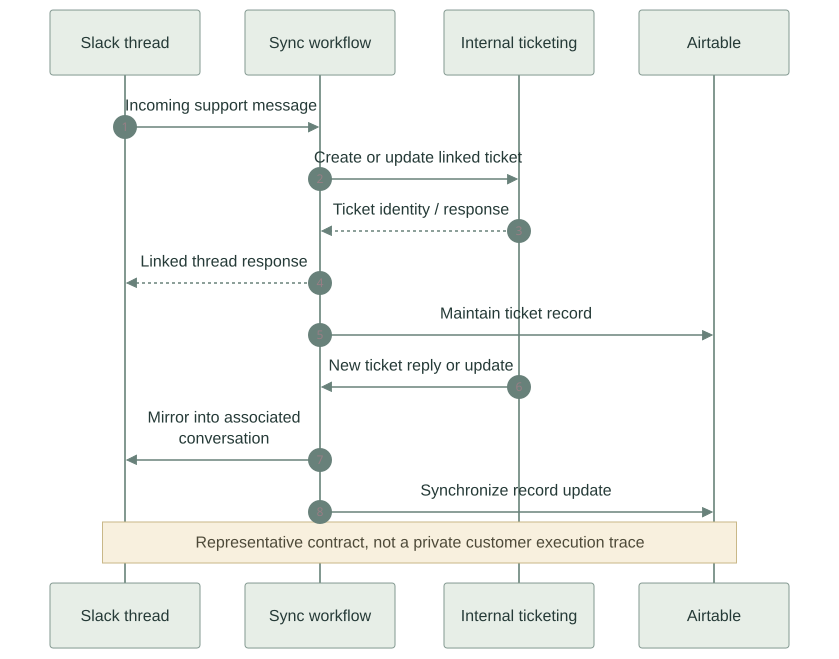

01 / THE PROBLEM
Slack–ticketing–Airtable synchronization
Support conversations and ticket records lived in different tools. A Slack reply, a ticket update, and the corresponding Airtable record needed to stay associated as work moved between teams and systems.
The automation also had substantial cost exposure. The ticket-sync workflow represented roughly half of total Zapier task usage, making it an important part of the wider move toward owned, code-based integrations.
02 / MY CONTRIBUTION
I built and maintained the Slack-to-internal-ticketing dual sync and the downstream ticket-to-Airtable record synchronization. I also migrated Zapier automations to Cloudflare Workers as part of the broader cost-reduction work.
03 / ARCHITECTURE
Conversation, ticket, and record

Read the Mermaid definition
flowchart LR
S[Slack conversation] -->|Message or reply| H[Sync workflow handlers]
H -->|Ticket operation| T[Internal ticketing platform]
T -->|Ticket event or reply| H
H -->|Thread response| S
H -->|Record synchronization| A[(Airtable records)]
Z[Legacy Zapier orchestration] -. Existing path .-> H
W[Migrated Cloudflare Worker automations] -. Code-based path .-> H
S -. Receipt evidence .-> M[Support monitoring and audit]
A -. Record evidence .-> M
A conversation crosses the boundary

Read the Mermaid definition
sequenceDiagram
autonumber
participant S as Slack thread
participant W as Sync workflow
participant T as Internal ticketing
participant A as Airtable
S->>W: Incoming support message
W->>T: Create or update linked ticket
T-->>W: Ticket identity / response
W-->>S: Linked thread response
W->>A: Maintain ticket record
T->>W: New ticket reply or update
W->>S: Mirror into associated conversation
W->>A: Synchronize record update
Note over S,A: Representative contract, not a private customer execution trace
04 / HOW IT WORKS
Receive an event from the working tool
Slack events and ticket-platform callbacks initiate separate directions of the integration. Each direction carries the conversation or ticket context needed by the destination.
Route the event through its workflow
The exports contain filters, conditional paths, lookups, formatting, code steps, and provider actions. Converting this system means preserving those decisions as well as the API calls.
Keep the conversation associated
Slack messages and ticket updates need to resolve to the same support conversation. A reply belongs with its existing ticket and thread, rather than becoming an unrelated record.
Maintain the reporting copy
Ticket information also flows to Airtable for record keeping. That downstream copy is a separate handoff from the Slack-to-ticket conversation itself.
05 / ENGINEERING DECISIONS
Preserve the workflow contract during migration
A short Worker can still be wrong if it drops a branch or changes a field mapping. The important unit is the end-to-end behavior, not how few lines replace the Zap.
Treat acknowledgments as evidence at a specific boundary
A Slack receipt or ticket-platform reply is evidence of that stage. It does not independently establish that every downstream Airtable record is present. The monitoring and audit system checks the gaps.
Separate the workplace system from the public showcase
Threadbridge is a separate Slack/Jira implementation with inspectable delivery and recovery. Its Durable Object journal and simulated demo are not retroactively attributed to the workplace Zapier system.
06 / OUTCOME & SCOPE
- Kept Slack conversations, internal tickets, and Airtable records connected.
- The ticket-sync workflow represented roughly half of total Zapier task consumption.
- Across the wider Zapier-to-Workers migration, task consumption fell 50% and task-cost savings exceeded $25,000. These are program-level results, not an isolated measurement of this one service.
Reading this case study
The topology and ownership are based on my implementation account, supported by the export structures and integration documentation. No live private endpoints are exposed, and no exactly-once delivery or complete migration claim is made.
Reviewed private Zap export structures and integration documentation. Diagrams contain only abstract system roles and representative exchanges.
Diagrams are abstracted from the workplace system. Customer records, credentials, internal endpoints, and proprietary source code are not included.